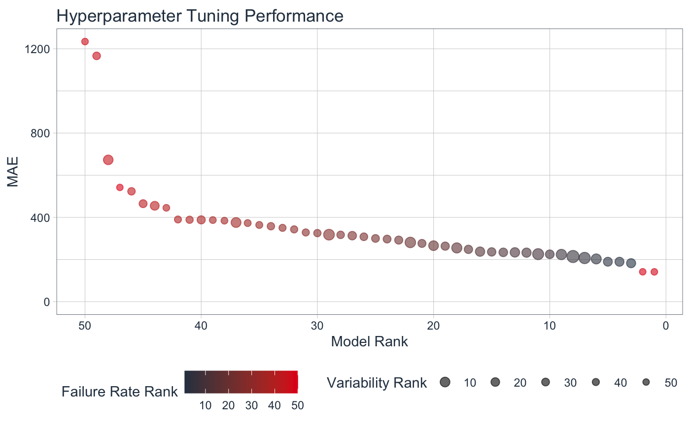

R/tune-plot_tune_parameter_ranking.R
plot_tune_rank_parameters.RdThe plot_tune_rank_parameters() function provides a visualization
for time series hyperparameter tuning results (tune_results) of either rolling_origin
or time_series_cv class that have been tuned.
plot_tune_rank_parameters( .data, .point_alpha = 0.6, .point_color_best = "#2C3E50", .point_color_worst = "#E31A1C", .point_size_best = 4, .point_size_worst = 2, .title = "Hyperparameter Tuning Performance", .color_lab = "Failure Rate Rank", .size_lab = "Variability Rank", .interactive = TRUE )
| .data | A |
|---|---|
| .point_alpha | Opacity for points. Set to 0.6 by default. |
| .point_color_best | Color of point for best model rank |
| .point_color_worst | Color of point for worst model rank |
| .point_size_best | Size of point for the best model rank |
| .point_size_worst | Size of point for the worst model rank |
| .title | Plot title |
| .color_lab | Legend label for color (Failure Rate Ranking) |
| .size_lab | Legend label for the size (Standard Error Ranking) |
| .interactive | Toggle between interactive plotly chart and static ggplot chart |
Metric Ranking (Model Accuracy, Y-Axis)
The model with the lowest (best) rank is that with the lowest mean error. Y-Axis is the Metric value.
Failure Rate Ranking (Robustness to New Data, Color)
Models with lower failure rates are more robust to new data. Color is the Failure Rate. Failure rate rank is a score based on the proportion of models that failed during tuning.
Calculation: Failure Rate = n / No. of Resample Slices
Models with a non-zero failure rate have a higher likelihood of failing on new data and are therefore less robust.
Standard Error Ranking (Model Variability, Size)
Models with lower standard error are more consistent (less variability). Size of the point is the standard error ranking.
tk_tune_rank_parameters - Ranking parameters
tk_tune_select_parameters - Selecting the best parameters
#> Warning: package ‘tune’ was built under R version 3.6.2library(timetk) arima_workflow_tuned %>% tk_tune_rank_parameters() %>% plot_tune_rank_parameters(.interactive = FALSE)#>